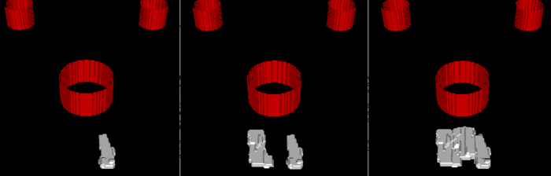
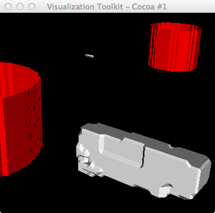
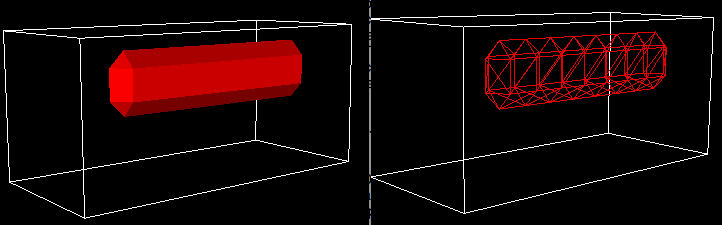
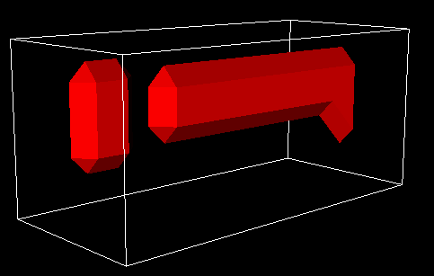

Can we compute the major and minor axes of a 3D contour from a vtkDiscreteMarchingCube, so that we can replace that contour with an ellipsoid glyph?

Showing (random) cell id contours for growing hep cells (cell type
9). The problem is that these cells are just partial - they wrap around
the top due to periodic BCs (but we clip out those). Therefore the
bottom of these cells are "open".

Showing a (almost) whole growing hep cell (cid 4443; #11; in the
inner layer). The tiny artifact floating above the primary cell for
this isovalue (=9) is a tiny piece of wraparound from periodic BCs.

A computed ellipsoidal-shaped cell (script follow).

# ~/Documents/Glazier/JimSluka/cell_contour/makeCell.py
import vtk
import sys
import string
argc = len(sys.argv)
#print 'argc=',argc
#if argc < 3:
#if argc < 4:
# print 'Usage: ',sys.argv[0],' <root-filename> degRot'
# print 'Usage: ',sys.argv[0],' <root-filename> maxCells elev'
# raise ValueError, 'Too few input args'
ren1 = vtk.vtkRenderer()
renWin = vtk.vtkRenderWindow()
renWin.AddRenderer(ren1)
iren = vtk.vtkRenderWindowInteractor()
iren.SetRenderWindow(renWin)
xdim,ydim,zdim=6,6,12
nvals = xdim*ydim*zdim
sval=vtk.vtkIntArray()
sval.SetNumberOfValues(nvals)
for idx in range(nvals):
sval.SetValue(idx,0)
# create 1st, long cell
idx= -1
for z in range(zdim):
for y in range(ydim):
for x in range(xdim):
idx += 1
if z>1 and z<zdim-2:
if y>2 and y<5:
if x>3 and x<5:
sval.SetValue(idx,1)
if z==2 and y==2 and x==4: # dog-leg
sval.SetValue(idx,1)
# create 2nd, shorter cell
idx = -1
for z in range(zdim):
for y in range(ydim):
for x in range(xdim):
idx += 1
if z>8 and z<11:
if y>1 and y<5:
if x>1 and x<3:
sval.SetValue(idx,1)
lattice=vtk.vtkImageData()
lattice.SetDimensions(xdim,ydim,zdim)
lattice.GetPointData().SetScalars(sval)
#pd.GetPointData().SetScalars(myScalars)
dmc = vtk.vtkDiscreteMarchingCubes()
#dmc.SetInputConnection(lattice.GetOutputPort())
dmc.SetInput(lattice)
dmc.SetValue(0,1)
dmcMapper = vtk.vtkDataSetMapper()
dmcMapper.SetInputConnection(dmc.GetOutputPort())
dmcMapper.ScalarVisibilityOff()
dmcActor = vtk.vtkActor()
dmcActor.SetMapper(dmcMapper)
dmcActor.GetProperty().SetColor(1,0,0)
ren1.AddActor(dmcActor)
#----------------------
outline = vtk.vtkOutlineFilter()
outline.SetInput(lattice)
mapOutline = vtk.vtkPolyDataMapper()
mapOutline.SetInputConnection(outline.GetOutputPort())
outlineActor = vtk.vtkActor()
outlineActor.SetMapper(mapOutline)
outlineActor.GetProperty().SetColor(1, 1, 1)
ren1.AddActor(outlineActor)
#------------------
renWin.SetSize(512,512)
cam = ren1.GetActiveCamera()
ren1.ResetCamera()
#cam.Elevation(elev)
#cam.Azimuth(degRot) # Elevation would spin about X
cam.OrthogonalizeViewUp()
#------------------
renWin.Render()
w2i = vtk.vtkWindowToImageFilter()
w2i.SetInput(renWin)
iw = vtk.vtkPNGWriter()
iw.SetInput(w2i.GetOutput())
#iw.SetFileName(root_fname+".png")
#print root_fname,', # unique cells=',len(unique_cell_ids)
#iw.Write()
iren.Start()